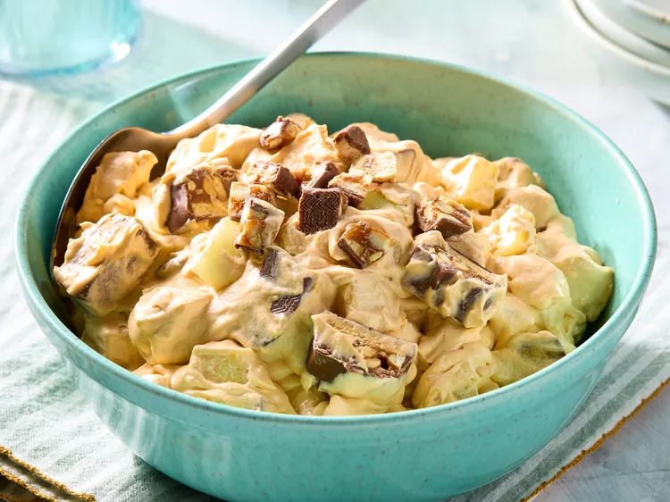

My Favorite Recipe
Snicker Salad
Ingredients
- 1 (3.4 ounce) package instant butterscotch pudding mix
- 1 cup milk
- 1 (6 ounce) package whipped cream topping
- 6 chocolate-coated caramel-peanut nougat candy bars (such as Snickers®), cut into bite-size pieces
- 3 Granny Smith apples - peeled, cored, and cut into bite-size pieces
Instructions
- Gather the ingredients.
- Whisk butterscotch pudding mix into milk in a bowl until dissolved.
- Stir whipped cream topping into pudding mixture.
- Fold the candy bar pieces into the pudding mixture.
- Fold the apples into the pudding mixture.
- Serve and enjoy.